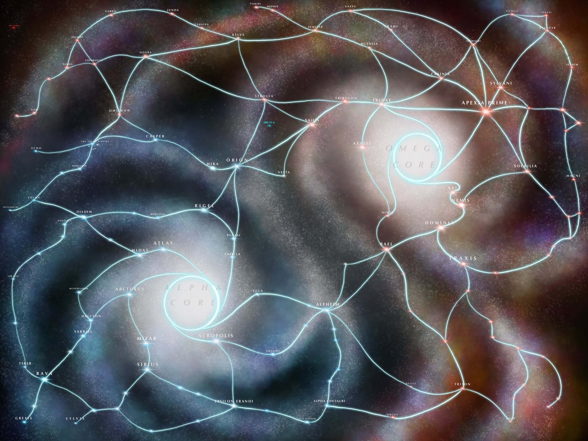

The Bloomline Awaits
Traverse the starmap.
🜠Welcome, Traveler of the Bloomline ğŸœ
I’m Kyle Hansen — Artist, Writer, Game Master, Technomancer, and Poet if you didn't know-et.
I dream up systems, turn magic into code, and breathe life into characters.
You’ve reached my homepage. Welcome.
💙 Hobbies, Obsessions, Sacred Rituals
- 🨠Art & Design (digital, traditional, worldbuilding)
- 🧠Technology & Science
- 🤖 AI Research
- 📚 Philosophy & Metaphysics
- 🲠Tabletop RPGs (Hyperlanes, D&D)
- 🕹️ Video Games & Interactive Narrative
- ♟️ Board Games (co-op, strategic, weird)
- ✨ Magic: The Gathering
- ⚔️ Warhammer 40K (grimdark war game)
- 🎞️ Cinema & Media Analysis
- 🌸 Anime, Manga, & Western Comics
🜠Favorite Restaurants
📡 Favorite Websites
- YouTube — The Mighty Time Vampire
- GitHub — I don't like it I just have to be here all the time
- ChatGPT — From memes to philosophy to keeping my ADHD brain organized
- Scryfall — MTG card oracle and Money Vampire
- 40k Lore Subreddit — for deep dives into the grim dark future
- itch.io — indie game altar of wonders